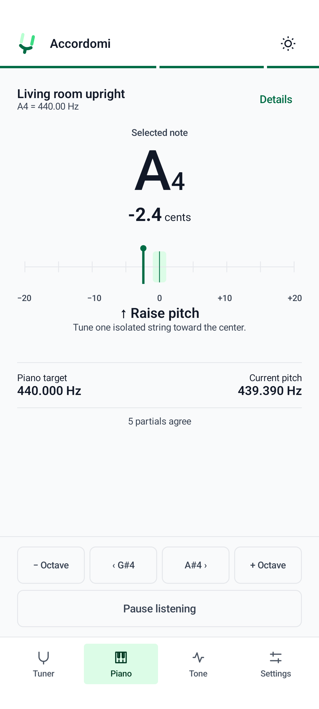
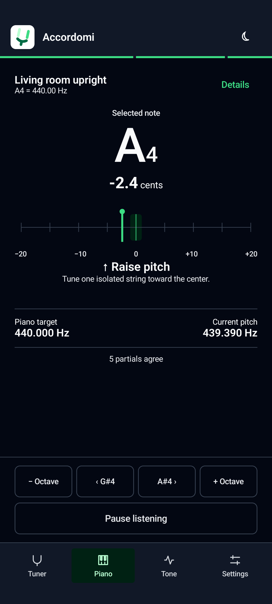
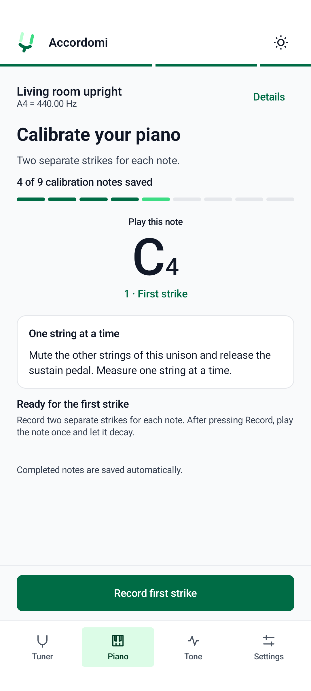
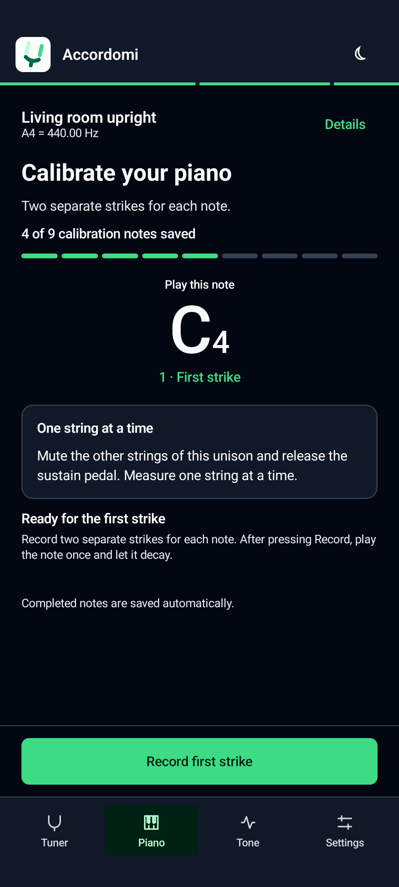
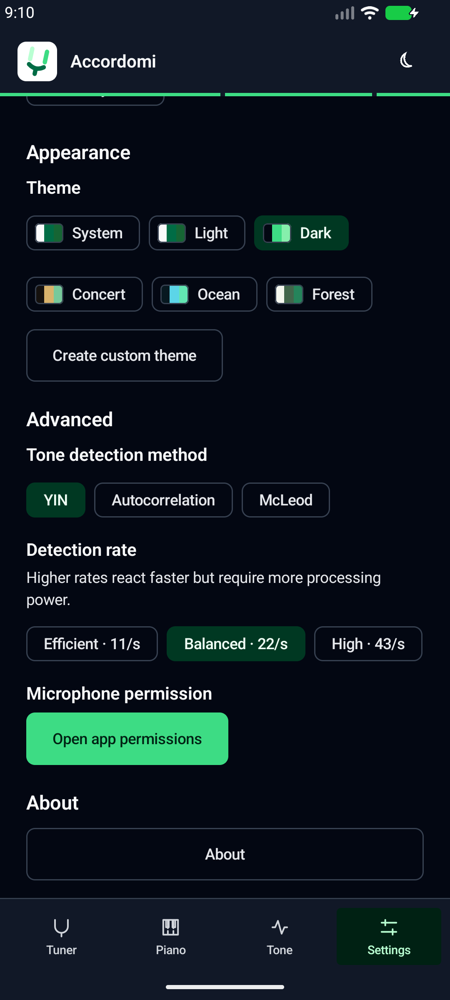
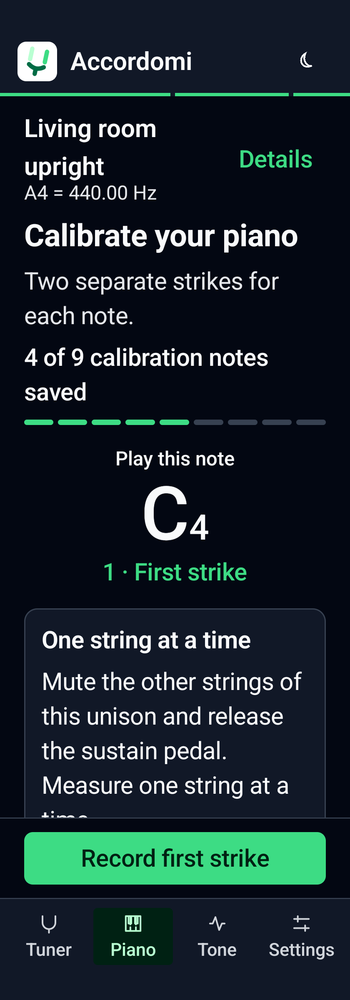

Accordomi / Android implementation
Real Compose screens using published LelloDesign 0.2.1. Captured on the test emulator with deterministic fixture measurements; these are not microphone recordings.

Piano tuning · Light
Piano tuning · Dark
Calibration · Light
Calibration · Dark
Settings · Dark (live app)Narrow screen with 150% text
